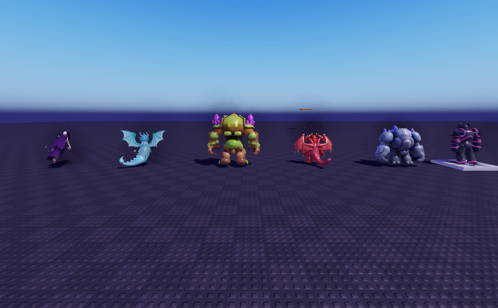
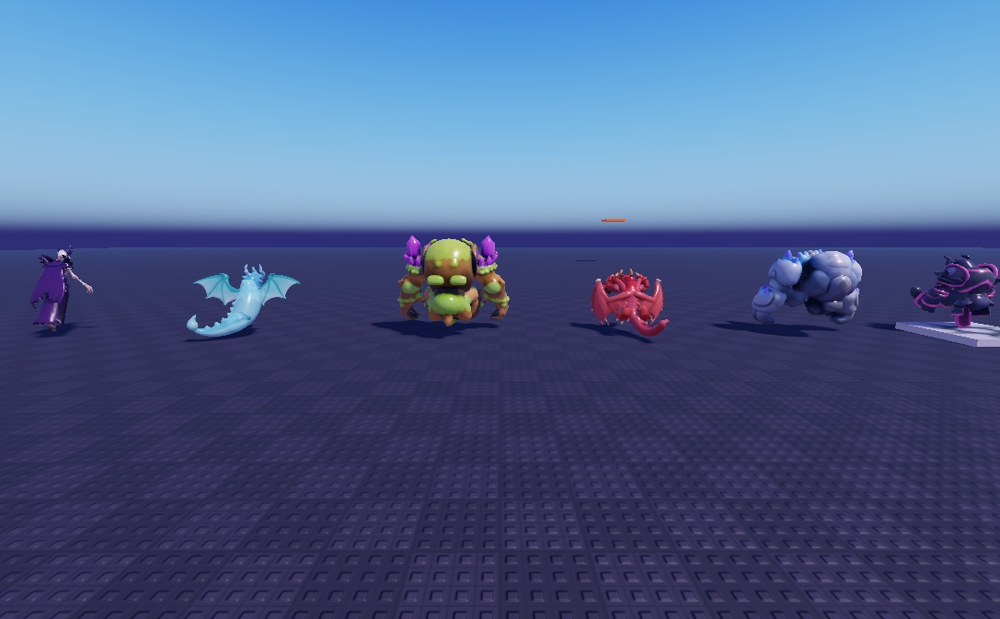
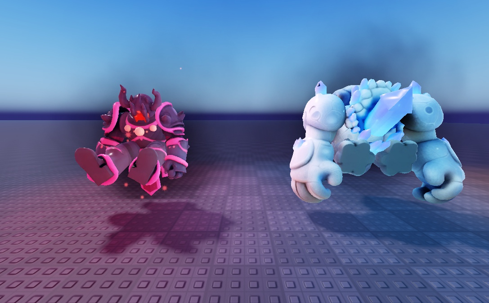
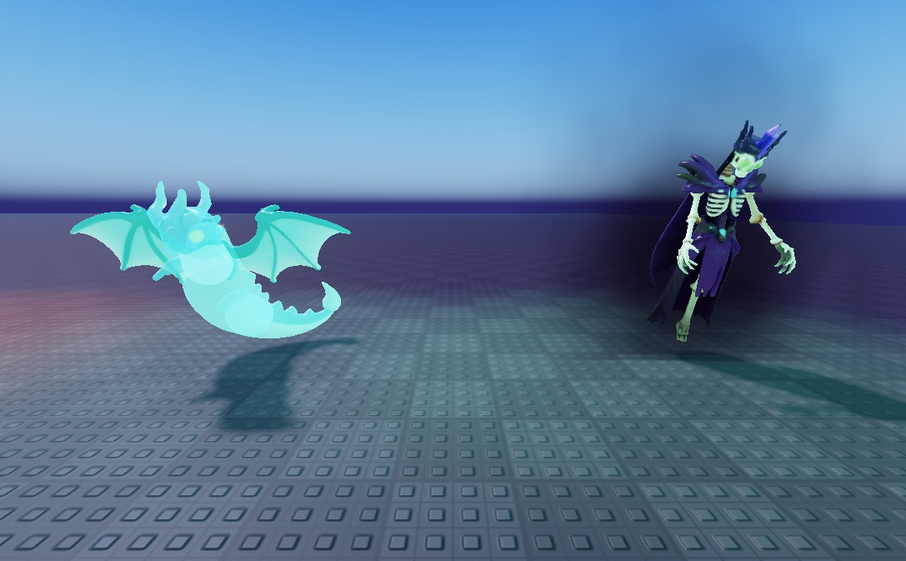

😴 Les VRAIS boss du jeu, endormis (captures de Studio)
Cette fois ce sont les vrais boss réalistes du jeu, construits par le code du jeu dans Studio et photographiés dans Studio. Ce n'est qu'un aperçu temporaire, rien n'est enregistré dans le jeu. J'ai fait tourner leurs morceaux pour les mettre en pose « endormi ». Les « Z z z », la respiration et l'étiquette viendront en plus dans le jeu.

Avant : les 6 boss debout, comme aujourd'hui (de dos sur cette image)

Après : les 6 boss en pose endormie

Le Géant et le Golem Ancien, de face : assis par terre, jambes en avant, tête baissée, bras posés

Le Dragon Spectral et la Liche Ancienne : ce sont des fantômes, ils flottent ; la pose endormie se voit encore peu (à améliorer)
Ce que j'en pense : pour le Géant et le Golem, la pose assise marche. Pour les fantômes (Liche, Dragon Spectral) et les dragons, il faut une pose plus marquée : ailes repliées, tête posée au sol, corps enroulé. Je n'ai pas pu finir les captures du Dragon Ancien et du Roi Citrouille, parce que la vue de Studio est devenue noire (fenêtre réduite ou cachée).